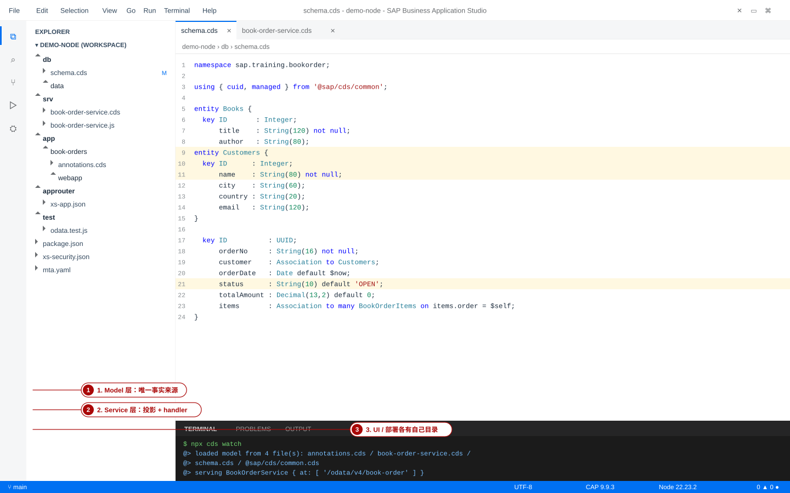
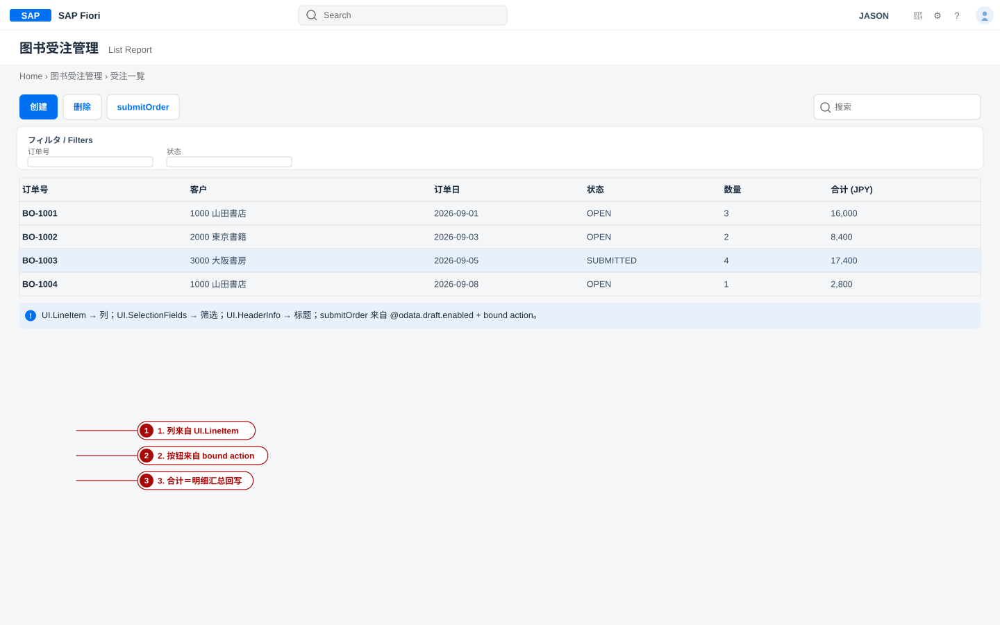
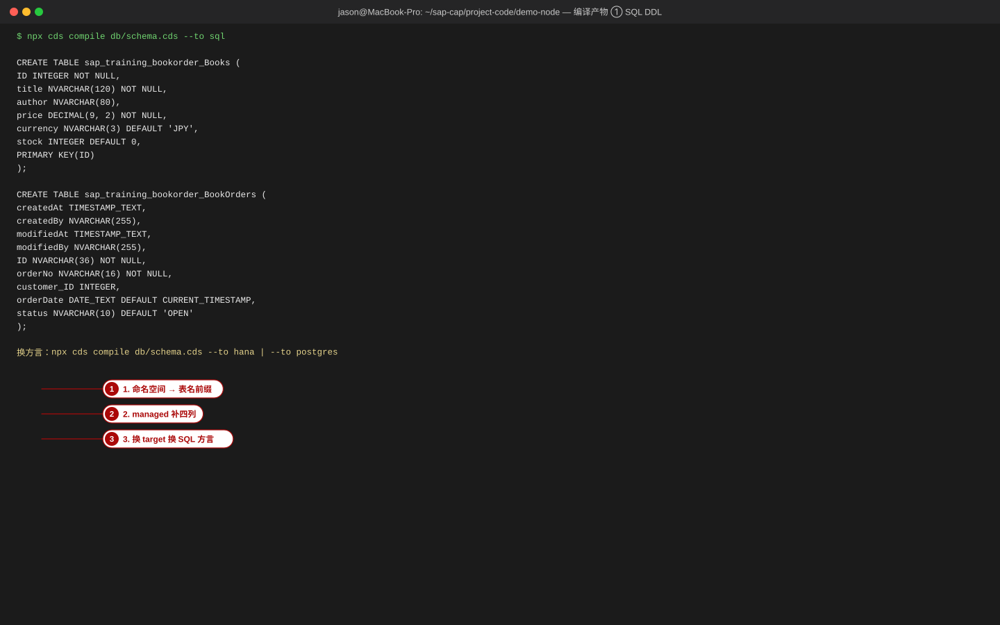
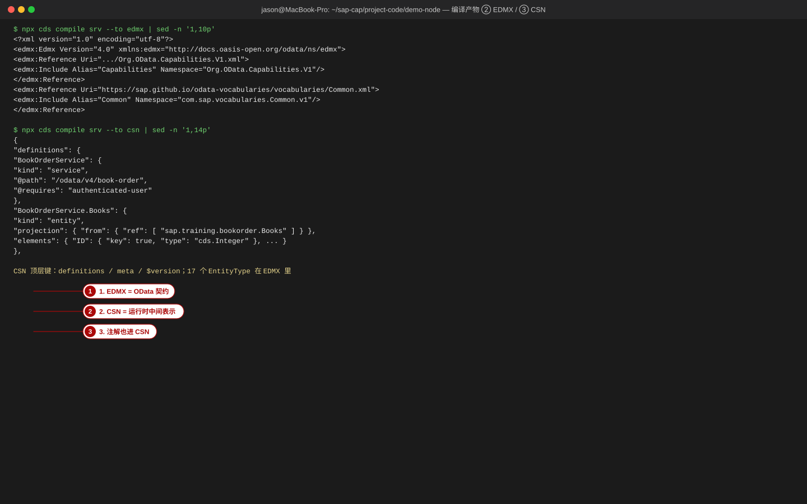
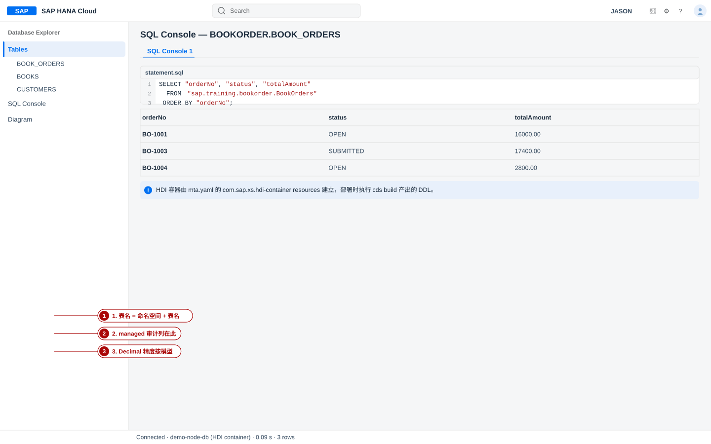
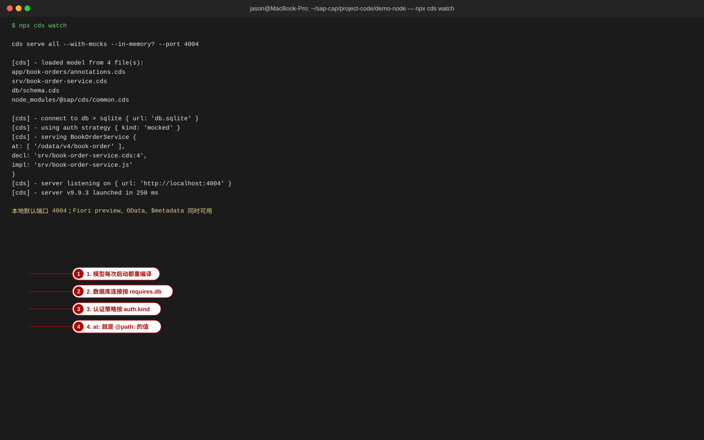
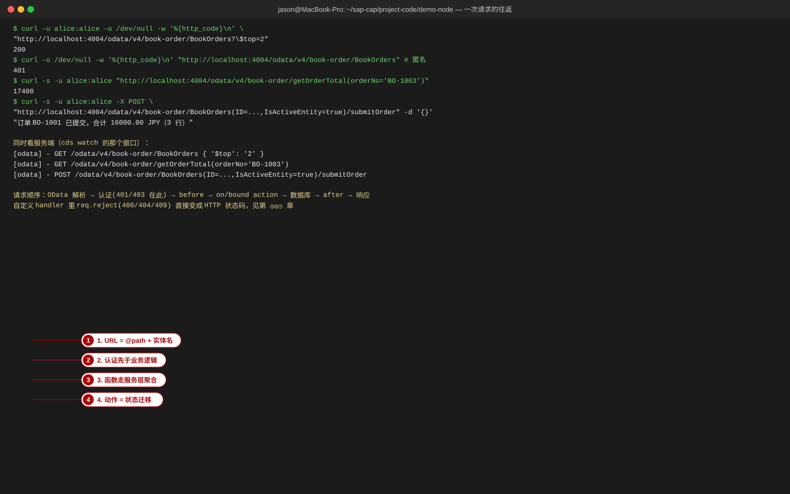
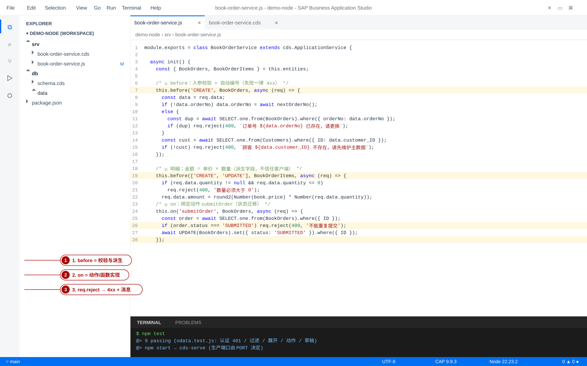
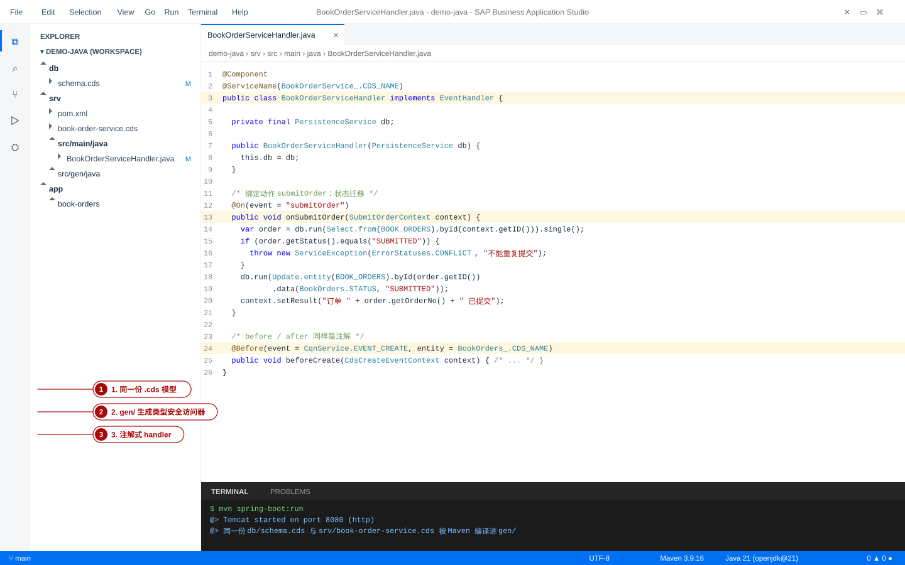
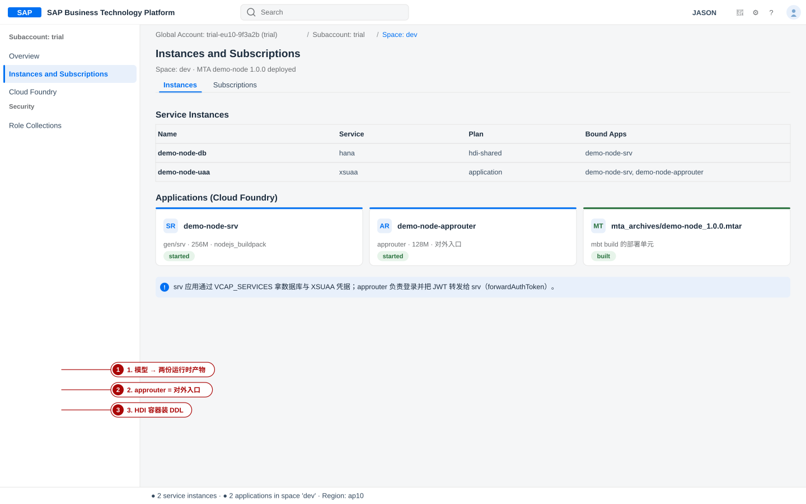

CAP 概念总览：先拿到坐标图，再进细节
本页是整门课程的坐标系：一句话定位 → 三层架构与编译产物 → 请求生命周期 → 15 个核心概念 → 双运行时对照 → 与 ABAP/RAP 的关系 → 11 个板块的导航地图 → 12 个常见误解 → 按角色的学习路线。所有示例都取自本站示范项目「图书受注管理」。
- 第一次读：只求「知道每样东西在哪一层」，细节看不懂就跳过——第 2、3、4 节的图是后面 10 个板块的公共坐标。
- 学完某个板块再回来：第 10 节的导航表把 11 个板块按「模型 → 服务 → 测试 → UI → 部署 → 权限」归类，可以当成词条索引。
- 卡住时：先看第 11 节的 12 个误解——大部分「CAP 用不下去」的感觉来自其中某一条。
1. 一句话定位
CAP（Cloud Application Programming Model）= 用一套模型（CDS）描述领域与服务， 用两种运行时（Node.js / Java）实现业务逻辑，于是自动得到三样东西： OData V4（以及 OpenAPI）API、数据库 schema、Fiori 可用（带注解的）界面契约。
entity / service / 注解→ cds 编译器
CSN → SQL / EDMX→ 运行时提供 API + 数据
Node.js 或 Java→ 界面与部署产物
Fiori Elements / MTA
三个「不需要你写」的东西最值得记住：不用写 DDL（模型编译成数据库表）、 不用写 CRUD 接口（服务声明即有 OData V4 端点）、不用写查询层样板（CQN 与运行时把请求翻译成 SQL）。 你要写的是：领域模型、业务规则、授权规则、界面注解。
2. 三层架构：模型 / 服务 / UI 在工程里的落点
| 层 | 它回答什么 | 示范项目里的文件 | 产物 |
|---|---|---|---|
| Model（领域层） | 业务对象、字段、类型、关联、约束 | db/schema.cds（Books / Customers / BookOrders / BookOrderItems / OrderItemView）、db/data/*.csv | 数据库 schema + 种子数据 |
| Service（服务层） | 哪些实体暴露给谁、以什么路径暴露、业务规则是什么 | srv/book-order-service.cds（服务定义 + 注解）、srv/book-order-service.js（handler）、xs-security.json | OData V4 $metadata + 可调用端点 + 授权 |
| UI（界面层） | 界面长什么样、点哪个按钮触发什么 | app/book-orders/annotations.cds（UI.* 注解）、app/book-orders/webapp/（manifest.json 等） | Fiori Elements 应用（List Report + Object Page） |
| 部署（横切） | 这些产物怎么变成云上的服务 | mta.yaml、approuter/xs-app.json、package.json | MTA 归档（.mtar）→ CF 上的应用与服务实例 |
2-1 改一处，影响哪些层（建模时最有用的直觉）
| 你改了什么 | 数据库 schema | OData 契约 | 界面 | 需要做什么才能生效 |
|---|---|---|---|---|
db/schema.cds 加一个字段 | 变（DDL 多一列） | 变（实体多一属性） | 只有加了 UI.* 注解才变 | 重新部署数据库（本地 cds deploy --to sqlite；云端走 schema 演进），重启服务 |
db/schema.cds 改关联 / 加视图 | 视图变成新表或 SQL 视图 | 变（导航属性/实体集） | 可能变（$expand 可用） | 同上；注意视图必须有主键才能当实体暴露 |
srv/*.cds 改服务定义（投影裁剪、@path） | 不变 | 变 | 可能变（字段不暴露，界面就取不到） | 重启服务即可 |
srv/*.cds 改授权注解 | 不变 | 不变（$metadata 本身不变） | 不变 | 重启服务；云端还要角色集合配合（见 ⑧） |
app/*/annotations.cds 改 UI.* | 不变 | 变（注解进 $metadata 的 <Annotations> 段） | 变 | 重启服务，刷新浏览器 |
srv/*.js / .java 改业务逻辑 | 不变 | 不变 | 不变 | 重启服务（cds watch 会自动重启） |
这张表回答了课堂上最常见的一个问题：「我改的东西要重新部署吗？」——凡是动了 db/ 的，都要过数据库；
只改服务注解与 handler 的，重启服务即可；只改 UI 注解的，改完刷新就能看到。

三层的依赖方向是单向的：UI 依赖服务，服务依赖模型；模型不依赖任何东西（也没有「模型层调用服务」这种事）。 这也是为什么改模型的影响最大——它会同时改变数据库、API 与界面。

app/book-orders/annotations.cds 里的 UI.* 注解（编译进 $metadata 的 <Annotations> 段），
webapp/ 里只有 manifest/Component 这类「外壳」。所以「改界面」在 CAP 里经常是改 CDS，不是改前端工程。3. 一份模型，三份产物：SQL DDL / EDMX / CSN
同一个 .cds 会被编译器按不同目标输出（--to）。理解这三个产物，就理解了 CAP 的「中间层」在干什么。
bash$ npx cds compile db/schema.cds --to sql # ① 数据库 DDL（按方言） $ npx cds compile srv --to edmx # ② OData V4 的 EDMX 契约 $ npx cds compile srv --to csn # ③ CSN（编译后的模型，JSON） $ npx cds compile srv --to xsuaa # ④ XSUAA 授权描述符（见 ⑧ 权限）
3-1 编译流水线：文本 → CSN → 各目标产物
db/ + srv/ + app/annotations.cds→ CDS 编译器
解析 / 解析关联 / 展开注解→ CSN（JSON）
运行时的中间表示→ SQL DDL
建库/演进 EDMX
OData 契约 xs-security.json
授权描述符
流水线的证据就在本机（示范项目实测）：
sql-- cds compile db/schema.cds --to sql 的真实输出（节选） CREATE TABLE sap_training_bookorder_BookOrders ( createdAt TIMESTAMP_TEXT, -- ← managed aspect 补的四个审计列 createdBy NVARCHAR(255), modifiedAt TIMESTAMP_TEXT, modifiedBy NVARCHAR(255), ID NVARCHAR(36) NOT NULL, -- ← UUID 主键 orderNo NVARCHAR(16) NOT NULL, customer_ID INTEGER, -- ← Association 生成的 FK 列 orderDate DATE_TEXT DEFAULT CURRENT_TIMESTAMP, status NVARCHAR(10) DEFAULT 'OPEN' );
bash$ npx cds compile srv --to csn | python3 -c "import sys,json;d=json.load(sys.stdin);print(list(d.keys()));print(len(d['definitions']),'definitions')" ['definitions', 'meta', '$version'] 16 definitions # 服务 + 服务实体/函数 + 领域实体都在同一个 CSN 里 $ npx cds compile srv --to edmx | grep -c 'EntityType' 17 # 服务层 5 个实体 + 草稿支撑类型 + …… 每个都会出现在 $metadata
@requires、@readonly、@odata.draft.enabled、UI.LineItem——
最终都以 JSON 形式存在于 CSN 里。调试「注解怎么没生效」时，
cds compile --to csn 是最快的确认手段：先去 CSN 里找那行注解，再怀疑运行时。

| 产物 | 给谁看 | 关键事实 |
|---|---|---|
| SQL DDL | 数据库（SQLite / HANA / PostgreSQL / H2） | 命名空间变成表名前缀（sap_training_bookorder_Books）；managed 自动补 4 个审计列；换 --to 就换方言 |
| EDMX（OData V4） | 前端、API 客户端、$metadata | OData 契约与词汇表引用；注解也进 EDMX 的 <Annotations> 段（Fiori 靠它渲染） |
| CSN | 编译器与运行时之间 | JSON 形式的模型；顶层是 definitions / meta / $version；运行时不读 .cds 文本，读 CSN |

云端还有第四个产物：HDI 容器（HANA 上的部署单元）。本地用 SQLite 时是「一个文件 + 6 张表」， 云端是「一个 HDI 容器 + 同一批表」，表结构由同一份 DDL 决定——这就是「本地通过 ≈ 云端也能建表」的依据， 但注意不等于云端业务一定通过（见第 11 节误解 5）。
4. 请求生命周期：一条 GET 走过了什么
/odata/v4/book-order 来自服务上的 @path；实体名、$filter、$expand 被翻译成 CQN。@requires / @restrict 执行——401 与 403 都在这里产生。on 时，运行时的通用实现把你的 CQN 语句交给数据库；写了 on（如 submitOrder）就由你的代码接管。req.reject(400/404/409, '消息') 变成 HTTP 状态码与错误体。4-1 一次真实往返的样本（示范项目实测）
bash$ curl -s -u alice:alice "http://localhost:4004/odata/v4/book-order/BookOrders?\$select=orderNo,status,totalAmount&\$orderby=orderNo"
json{ "@odata.context": "$metadata#BookOrders", "value": [ { "orderNo": "BO-1001", "status": "SUBMITTED", "totalAmount": 16000, "ID": "4a1f8c03-0001-…", "IsActiveEntity": true }, { "orderNo": "BO-1002", "status": "OPEN", "totalAmount": 12000, "ID": "4a1f8c03-0002-…", "IsActiveEntity": true }, { "orderNo": "BO-1003", "status": "SUBMITTED", "totalAmount": 17400, "ID": "4a1f8c03-0003-…", "IsActiveEntity": true } ] }
把请求拆开对照第 4 节的阶段表，可以逐段看到 CAP 在替你做什么：
| 请求里的片段 | 谁解释它 | 结果 |
|---|---|---|
/odata/v4/book-order | 服务上的 @path | 路由到这个服务（写错 → 404） |
/BookOrders | 服务里的 entity BookOrders | 选实体集；$metadata 里对应 <EntitySet Name="BookOrders"/> |
-u alice:alice | auth 中间件（本地 mocked） | 构造 req.user；匿名则 401 |
$select / $orderby / $filter / $expand | OData 适配器 → CQN | 翻译成 SQL 的列裁剪、排序、条件与 join |
IsActiveEntity | draft 框架 | 草稿实体自动附加的系统字段（见 6-1 节） |
响应里的 @odata.context | OData 适配器 | 告诉客户端这条数据的元数据地址 |
bash# 负例：不带凭据 → 401，响应体是纯文本 Unauthorized（不是 JSON 错误对象） $ curl -s http://localhost:4004/odata/v4/book-order/BookOrders Unauthorized # 负例：越权 → 403，响应体是 OData 错误对象（带 code 与 numericSeverity） $ curl -s -u bob:bob "http://localhost:4004/odata/v4/book-order/BookOrders?\$top=1" {"error":{"message":"Forbidden","code":"403","@Common.numericSeverity":4}}
error.message；对 401 你得自己给文案
（在浏览器场景里，401 通常意味着该跳登录了）。

| 阶段 | 谁在执行 | 你能插手的钩子 | 典型错误 |
|---|---|---|---|
| 解析 / 路由 | 协议适配器（OData V4） | —（用 @path 与实体名控制） | 404：路径或实体名不对 |
| 认证 | auth 中间件（mocked / jwt / xsuaa / ias） | 自定义 impl 中间件 | 401 |
| 授权 | 通用授权框架（按 CDS 注解） | @requires / @restrict；也可在 handler 里 req.reject(403) | 403 |
| before | 你的 handler | this.before(event, entity, fn) | 400 / 409（校验失败） |
| on | 缺省实现或你的 handler | this.on(...) | 500（未捕获异常）、404 |
| after | 你的 handler | this.after(...) | 副作用没生效（例如合计没回写） |
5. 15 个核心概念
每个词一行定义 + 示范项目里的实例。看不懂的先记位置，后续板块会逐个展开。
| 概念 | 一句话定义 | 示范项目里的例子 |
|---|---|---|
| CDS（Core Data Services） | CAP 的建模语言与编译器：用声明式文本描述数据、服务与注解 | db/schema.cds、srv/book-order-service.cds |
| entity | 可持久化的结构化类型（≈ 表 / 视图） | entity BookOrders : managed |
| projection | 基于源实体/视图的再定义（服务层暴露时用它裁剪字段与关联） | entity BookOrders as projection on db.BookOrders |
| aspect | 可复用的字段集合，用 : 混入实体 | managed（补 createdAt/By、modifiedAt/By）、cuid |
| association | 单向的「引用」关系，按需 expand | customer : Association to Customers、items : Association to many … |
| composition | 「整体-部分」关系，子项随父项生命周期（文档语义 + draft 编辑单位） | 示范项目故意不用：Composition 的父侧 FK 不会被 CSV 填充，$expand 会返回空数组（见 ④ 章） |
| annotation（注解） | 给编译器和运行时看的元数据，用 @ 写在模型上 | @readonly、@odata.draft.enabled、@path、@requires、UI.LineItem |
| handler（事件处理器） | 业务实现挂到事件上的钩子：before / on / after | this.on('submitOrder', BookOrders, …) |
| CQN（Query Notation） | 运行时内部表示查询的 JSON 结构；也是你写程序化查询（SELECT / UPDATE）的 API | SELECT.one.from(BookOrders).where({ orderNo }) |
| draft（草稿） | 「先编辑、后激活」的两阶段写入模型，Fiori 编辑流程的基础 | @odata.draft.enabled + (ID=…,IsActiveEntity=false) 的 URL 形态 |
| HDI container | HANA 上的租户隔离部署单元，装着你编译出来的表与视图 | 云端 demo-node-db（hana / hdi-shared） |
| MTA | Multi-Target Application：把多个模块（srv、approuter）与资源（HANA、XSUAA）打包成一个部署单元 | mta.yaml → mbt build → .mtar → cf deploy |
| XSUAA | BTP 的 OAuth2 授权服务：把 xs-security.json 的角色变成 JWT 里的 scope | 资源 demo-node-uaa（xsuaa / application） |
| approuter | 应用路由器：对外入口、负责登录流程，并把 JWT 转发给后端 | approuter/xs-app.json + forwardAuthToken: true |
| Fiori Elements | 由注解驱动的标准 Fiori 界面模板（List Report / Object Page） | app/book-orders/annotations.cds 的 UI.HeaderInfo / UI.LineItem |
6. 一个常被忽略的取舍：同样的数据，三种暴露方式
示范项目在同一份模型上演示了三种暴露方式，它们的约束条件比语法更重要：
| 方式 | 示范项目 | 为什么这么做 |
|---|---|---|
| 投影实体（可读写） | entity BookOrders as projection on db.BookOrders | 默认暴露原实体的可写形态；配 @odata.draft.enabled 支持草稿流程 |
| 只读实体（有主键的视图） | @readonly entity OrderItemView as projection on db.OrderItemView | 视图有主键才能作为 OData 实体暴露；它只用于读，所以 @readonly |
| 函数（返回值/结构体数组） | function getOrderTotal(orderNo : String) returns Decimal(13,2);、function getOrderSummary() returns array of OrderSummaryRow; | 聚合结果没有主键，暴露成实体会报 Expected entity to have a primary key；所以聚合一律走「函数 + 服务层实现」 |
group by、count、sum 这类结果集，在 CAP 里都应当走
函数（unbound function）或 实体化的结果表，不要试图把它声明成视图实体。6-1 把 draft 拆开看：它到底改了什么
@odata.draft.enabled 不只是「多一个按钮」。给 BookOrders 打开草稿后，示范项目的数据库里会多出支撑表，
URL 形态也变成两态（实测，同一张订单）：
| 动作 | URL | 观察到的现象 |
|---|---|---|
| 建草稿（POST） | POST /BookOrders | 返回体里 orderNo: null、IsActiveEntity: false——此时还没激活，编号也没生成 |
| 读草稿 | GET /BookOrders(ID=…,IsActiveEntity=false) | 只能看到草稿态的数据 |
| 激活 | POST /BookOrders(ID=…,IsActiveEntity=false)/BookOrderService.draftActivate | 201；orderNo 被 before CREATE 生成（BO-1006），IsActiveEntity: true |
| 业务校验失败 | 同上 | 空订单提交 → 400「订单 BO-1005 没有明细，不能提交」；重复提交 → 409 |
bash# 部署后实际的表（sqlite 实测，work/evidence/02_tables.txt） $ python3 work/sqlite_tables.py project-code/demo-node/db.sqlite TABLES: ['BookOrderService_BookOrders_drafts', 'DRAFT_DraftAdministrativeData', 'cds_outbox_Messages', 'sap_training_bookorder_BookOrderItems', 'sap_training_bookorder_BookOrders', 'sap_training_bookorder_Books', 'sap_training_bookorder_Customers'] BookOrderService_BookOrders_drafts 0 rows DRAFT_DraftAdministrativeData 0 rows sap_training_bookorder_BookOrders 4 rows sap_training_bookorder_BookOrderItems 9 rows sap_training_bookorder_Books 5 rows sap_training_bookorder_Customers 3 rows
所以「draft 是 UI 功能」的说法在四个地方站不住：数据库多两张表、URL 多一个 IsActiveEntity 维度、
handler 的触发时机变了（before CREATE 在激活时触发）、授权也要考虑草稿实体。
7. Node.js 还是 Java：两种运行时的坐标
两边跑的是同一份 CDS 模型，差别在实现层与工程习惯。下表按 14 个维度对照（示范项目 Node 版已在本机实测运行；Java 版按同一模型构建）。
| 维度 | Node.js 运行时 | Java 运行时 |
|---|---|---|
| 项目结构 | db/、srv/*.cds、srv/*.js、app/ | db/、srv/*.cds、srv/src/main/java/、srv/src/gen/java/（生成的访问器） |
| 构建工具 | npm（package.json） | Maven（srv/pom.xml + cds-maven-plugin） |
| 脚手架 | cds init、cds add … | cds init --java，或 mvn archetype:generate -DarchetypeArtifactId=cds-services-archetype |
| handler 写法 | this.before/on/after('事件', 实体, fn)，或 extends cds.ApplicationService | @Before / @On / @After 注解方法 + implements EventHandler |
| 类型安全 | 无编译期类型（可选用 TypeScript / 生成的类型定义） | 有：srv/src/gen/java 生成实体访问器（如 Books_、BookOrders.STATUS） |
| 依赖注入 | 模块 require / cds.connect.to() | Spring：@Component、构造注入、@Autowired |
| 事务 | cds.tx() / req.tx（每个请求自带事务上下文） | ChangeSet Context + Spring 的 @Transactional、TransactionTemplate |
| 错误返回 | req.reject(400, '消息')、req.error() | 抛 ServiceException(ErrorStatuses.…, '消息') |
| 测试框架 | mocha / chai（npm test） | JUnit + Spring 测试支持（MockMvc、注入、mock 用户） |
| 启动命令 | npx cds watch（本地 4004）/ npm start | mvn spring-boot:run（本地 8080） |
| 部署形态 | Node.js buildpack 上的应用（gen/srv） | 可执行 jar（cds-starter-cloudfoundry）+ Java buildpack |
| 启动 / 性能取舍 | 启动快，热重载友好，适合内环开发与 IO 密集服务（~ 具体取决于负载特征） | 启动慢（JVM + Spring 初始化），长驻高并发下资源占用更稳定（~ 需按实际压测） |
| 生态 | npm 生态、CAP 新特性通常先落地 Node | Maven / Spring 生态，适合已有 Java 团队与库 |
| 学习曲线 | 平缓：会 JS 就能开始，CAP 的「方言感」更少 | 陡一些：需要 Maven、Spring 与注解式编程的基础 |


7-1 版本与依赖坐标（本站实测环境）
| 组件 | 本站实测版本 | 说明 |
|---|---|---|
| Node.js | v22.23.2（LTS） | CAP 9 推荐 LTS；better-sqlite3 这类原生模块依赖它 |
@sap/cds（运行时） | 9.9.3 | 服务启动日志里会打印 server v9.9.3 launched in … |
@sap/cds-dk（CLI 工具） | ^9 | 提供 cds watch / compile / deploy / add / init；与运行时保持同一大版本 |
| 本地数据库 | @cap-js/sqlite ^2（SQLite 3.53.2） | 零配置；云端换成 HANA Cloud（hdi-shared） |
| 测试 | mocha ^10 + chai ^5 | npm test；另有 OData 验收脚本 test/odata-verify.sh |
| JDK / Maven（Java 侧） | openjdk 21.0.12.1 / Maven 3.9.16 | CAP Java 要求 JDK 17/21 这一档与 Maven 3.9+（~ 具体最低版本随 CAP Java 版本变化） |
| 云端服务 | 未在本机开通（~ 按手顺教学） | xsuaa / application、hana-cloud 或 hana / hdi-shared——plan 名随区域与版本可能不同，用 cf marketplace 核对 |
db/ 模型也是常见做法。8. 「同一份模型」到底共享到什么程度
| 共享 | 不共享 |
|---|---|
db/*.cds（领域模型）、srv/*.cds（服务定义与注解）、授权注解（@requires/@restrict）、UI 注解（UI.*）、CSV 种子数据 |
handler 的实现代码（.js vs .java）、构建脚本、测试用例、gen/ 里生成的东西 |
所以「换运行时」的真实工作量是：重写 handler、重建工程、重跑测试；模型、API 契约、界面注解、授权规则都不用动。 这也是本课程把 ⑤ Node 与 ⑥ Java 放在同一份「图书受注管理」模型上的原因。
8-1 三条命令自查：确认你真的读懂了这一页
- 动作：在示范项目根目录跑
验证：输出的定义名里，你能指出哪一个是领域实体、哪一个是服务层投影、哪两个是函数。bash$ npx cds env get requires # 看运行时依赖：db / auth 分别被配置成什么 $ npx cds compile srv --to csn | python3 -c "import sys,json;d=json.load(sys.stdin);print([k for k in d['definitions'] if 'BookOrderService' in k])" ['BookOrderService', 'BookOrderService.Books', 'BookOrderService.Customers', 'BookOrderService.BookOrders', 'BookOrderService.BookOrderItems', 'BookOrderService.OrderItemView', 'BookOrderService.getOrderTotal', 'BookOrderService.OrderSummaryRow', 'BookOrderService.getOrderSummary'] - 动作：
npx cds watch，然后curl -s -u alice:alice localhost:4004/odata/v4/book-order/\$metadata | grep -c EntitySet。 验证：能对上服务里声明的实体集个数（示范项目 5 个）。 - 动作：删掉一个
UI.LineItem注解里的字段，重启，刷新 Fiori preview。 验证：列表少一列——说明「界面由 CDS 注解生成」这条结论在你手上成立。
project-code/demo-node/ 交付并实测了 Node 版；
Java 版按 CAP Java 官方工程布局与 API 讲解（本机已具备 JDK 21 与 Maven 3.9.16），
所以概念页与 ⑥ 章里 Java 的画面标注为高保真重绘而非实机截图。9. CAP 与 RAP / 传统 ABAP 的关系
对 ABAP 背景的学员，最快建立坐标的方式是逐项对照（不是替代关系，是同一套 CDS 思想的两个执行环境）：
| 维度 | 传统 ABAP（含 CDS View） | RAP（ABAP RESTful Application Programming） | CAP |
|---|---|---|---|
| 模型语言 | ABAP CDS DDL（define view，在 ABAP 运行时内） | ABAP CDS（+ BDEF 行为定义） | CDS（CDL）：entity / service / aspect / 注解 |
| 运行时 | ABAP 应用服务器（同一套 LUW / 内表） | ABAP Platform（同一套，加 RAP 框架） | Node.js 或 Java（跑在 BTP / Kyma / 任何容器平台） |
| 业务实现写法 | FORM / CLASS / OO ABAP，手写 SQL 与 UI 逻辑 | 行为实现类 + determination / validation / action，用 MODIFY ENTITY 等 EML 语句 | handler：JS 的 before/on/after 或 Java 的 @Before/@On/@After |
| 注解体系 | ABAP CDS 注解（@UI、@Semantics） | 同一套 + RAP 专属（@AccessControl 等） | CDS 注解 + OData 词汇表（UI.*、Capabilities.*）+ CAP 注解（@restrict、@odata.draft.enabled） |
| 授权 | 授权对象 + AUTHORITY-CHECK | DCL（access control）+ 授权对象 | @requires / @restrict + XSUAA 角色集合 / AMS |
| 事务 | LUW + COMMIT WORK | RAP 事务框架（保存序列） | cds.tx()（Node）/ ChangeSet + @Transactional（Java） |
| 部署位置 | S/4HANA / ECC 系统内 | 同上（就地扩展、紧耦合业务） | BTP Cloud Foundry / Kyma / 其它容器（紧邻业务系统之外） |
| 界面 | GUI / Fiori（注解同源） | Fiori Elements（同源，靠 @UI 注解） | Fiori Elements（同一套 UI.* 注解认知完全可迁移） |
| 典型场景 | 既有核心业务逻辑、报表 | S/4 上的新扩展应用、需要与标准表强一致的业务 | BTP 上的新应用、集成/编排服务、跨系统 API、非 SAP 数据源 |
- CDS 是共同语言：你已经会的「用 CDS 描述视图、用注解描述界面」在 CAP 里几乎原样保留，只是模型跑在 ABAP 之外。
- EML 换成 CQN：在 RAP 里你写
MODIFY ENTITY/READ ENTITY，在 CAP 里写INSERT/UPDATE/SELECT（CQN API），思路一致。 - 授权换了实现者：
AUTHORITY-CHECK/ DCL 的角色由@restrict+ XSUAA 角色集合承担，运行位置从「系统内」变成「BTP 子账户」。
10. 术语地图：11 个板块按「模型 → 服务 → 测试 → UI → 部署 → 权限」归类
| 归类 | 板块 | 它解决什么问题 | 完成判据（可观察） |
|---|---|---|---|
| 环境 | ① BTP 注册与环境就绪 | 全局账户 / 子账户 / 权限 / CF 空间与三个关键服务实例 | cf target 输出正确的 org / space |
| ② BAS 开发环境 | Dev Space、终端、调试、Git、从 BAS 直接部署 | 终端里 npx cds --version 有输出 | |
| 模型 | ④ CDS 建模 + ③ HANA 云与 HDI | 类型、主键、关联、视图、注解、种子数据；云端数据库与 HDI 容器 | cds deploy 后清点表与行数；--to sql 无 error |
| 服务 | ⑤ Node.js 服务实现 | 服务定义、before/on/after、CQN、事务、草稿、动作与函数 | curl 能查到数据、能触发业务规则（含 4xx 负例） |
| ⑥ Java 服务实现 | 同一模型的 Maven 工程与注解式 handler | mvn spring-boot:run 后 OData 返回同样数据 | |
| 权限 | ⑧ 认证与授权 | auth kind、@requires/@restrict、xs-security.json、角色集合与 JWT | 匿名 401、授权 200、越权 403 三态齐全 |
| 测试 | ⑦ 测试体系 | 模型编译检查 → 单元测试 → OData 集成测试 → CI | 验收脚本全绿（本项目 26 条断言） |
| UI | ⑨ Fiori UI | Fiori Elements 与注解、manifest、草稿交互 | 浏览器里能列出订单并进入明细页 |
| 部署 | ⑩ 构建与部署 | cds build → mbt build → cf deploy、更新与回滚、CI/CD | 路由上 curl $metadata 返回 200 |
| 示范项目（端到端） | 把 ①–⑩ 串成一条线并交付全部源码与实测输出 | 能独立复现一遍：模型 → 服务 → 测试 → 界面 → 部署 | |
| 资料 | 源码 · 速查 · 排错 · 任务索引 · 术语表 · 自测 | 查命令、复制源码、按错误信息定位、按任务推进 | 遇到报错能在排错页找到对应条目 |

11. 12 个常见误解
| # | 误解 | 正确理解 |
|---|---|---|
| 1 | 「CAP 只是 Node 框架」 | CAP 是模型运行时，官方提供 Node.js 与 Java 两种实现，共享同一份 CDS 模型；选哪个不影响模型与 API 契约。 |
| 2 | 「CDS 是数据库（或 CDS 就是 SQL）」 | CDS 是建模语言 + 编译器。它不存数据，而是编译出 SQL DDL、EDMX、CSN；同一个模型可以编译到 SQLite / HANA / PostgreSQL。 |
| 3 | 「@readonly 就是权限控制」 | @readonly 是对所有用户的接口约束（等价于只授予 READ），不区分用户；按角色控制要写 @restrict / @requires。 |
| 4 | 「getOrderSummary 这种聚合可以直接暴露成实体」 | OData 实体必须可寻址（有主键）；group by 的结果没有主键，暴露为实体会报 Expected entity to have a primary key。用函数（或物化结果表）。 |
| 5 | 「本地 SQLite 通过，就等于能上 HANA」 | SQLite 只验证模型与业务逻辑；类型映射、HDI 部署、schema 变更、大小写与排序规则都不同。上云前必须跑 --to hana 并做一次真实部署验证。 |
| 6 | 「draft 只是 UI 功能」 | draft 是服务端的两阶段写入模型（草稿表 + 激活），会影响 URL 形态（IsActiveEntity）、键处理、handler 触发时机与授权检查，是接口语义的一部分。 |
| 7 | 「服务里写了 entity X as projection on db.X 就等于做了授权」 | 投影只决定暴露什么，与谁能访问无关。CDS 服务默认没有访问控制。 |
| 8 | 「cds watch --with-mocks 的行为 = 生产行为」 | 本地默认用 SQLite + mocked 认证，生产是 HANA + xsuaa。两处在认证、数据库方言、部署拓扑上都不同。 |
| 9 | 「注解只是给前端看的注释」 | 注解是可执行的元数据：@readonly/@Capabilities/@restrict 由运行时强制执行，UI.* 驱动 Fiori 渲染，@cds.autoexpose 直接改变实体是否可达。 |
| 10 | 「改了 CSV 种子数据，重启服务就会更新」 | CSV 只在 部署（建库）时导入。改数据要重新 cds deploy（或删掉 sqlite 文件再部署）；改模型结构还要考虑 schema 演进。 |
| 11 | 「req.reject 和抛异常差不多」 | 两者结果不同：req.reject(409, '消息') 会返回带消息的 4xx；未捕获的异常是 500，消息也不适合直接给终端用户。 |
| 12 | 「CAP 项目不需要写数据库脚本，所以也不需要管数据量/索引」 | 模型会自动建表和主键，但不会替你加业务索引；where 授权条件、$filter、关联展开都会落到 SQL 上，量大了要靠索引与查询设计（CAP 有专门的数据模型性能指南）。 |
12. 按角色的学习路线
后端 / 全栈工程师
第 1 步
读本页 + ④ CDS 建模，把示范项目的 schema.cds 抄一遍、编译一次。
前端 / Fiori 工程师
第 1 步
本页第 3、4 节 + ⑨ Fiori UI：先在 $metadata 里找到 UI.LineItem，理解「界面由注解生成」。
第 2 步
读 app/book-orders/manifest.json 与 annotations.cds，改一个列、一个筛选字段，刷新预览确认。
第 3 步
⑤ Node 服务 的草稿与动作部分：搞清 IsActiveEntity 与 bound action 的调用形态。
13. 本节测试
- 用一句话说明 CAP 是什么，并说出它自动产生的三样东西。
- 模型 / 服务 / UI 三层分别对应示范项目的哪些文件？依赖方向是什么？
cds compile的--to sql、--to edmx、--to csn三个产物各自给谁看？- 按顺序说出一次 GET 请求经过的阶段，并指出 401 与 403 分别产生在哪个阶段。
- 为什么
getOrderSummary这种聚合不能用实体暴露？CAP 里正确的做法是什么？ - Node 与 Java 运行时共享什么、不共享什么？换运行时的真实工作量在哪。
- 把「授权对象 +
AUTHORITY-CHECK」和「@restrict+ 角色集合」对上，说明各自的执行位置。 - 从第 11 节的 12 个误解里挑出你自己最可能犯的两个，并写出正确理解。
14. 小结
- 一套模型，两种运行时：CDS 描述领域与服务，Node.js / Java 实现业务逻辑，编译产物自动覆盖数据库、API 与界面契约。
- 三层单向依赖：模型 → 服务 → UI；改模型的影响面最大，所以建模阶段值得慢下来。
- 请求生命周期固定：解析 → 认证 → 授权 → before → on → after → 响应；每个阶段都有对应的注解或钩子，把它们对上就不会迷路。
- 与 ABAP 是同一套思想的另一执行环境：CDS 与 UI 注解可以直接迁移，业务实现与授权换个写法而已。
下一步建议：先按 ① BTP 注册 把环境搭起来；没有 BTP 账号也可以直接从 ④ CDS 建模 开始——本课程 ④–⑨ 的全部内容都能在本机（SQLite + mocked 认证）完成， 示范项目 就是按这个前提设计的。